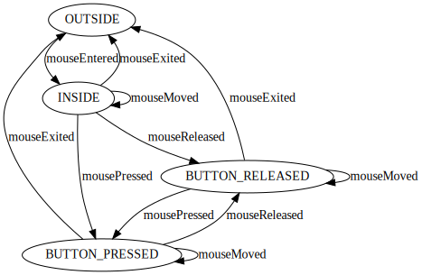
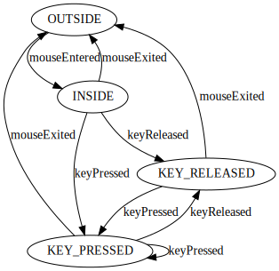

A graphical toolkit is not only about painting components,
it is also about allowing the end user to interact with
the components painted on screen. This interaction happens
through a mouse and a keyboard, as you perfectly know
by experience, since you have been interacting with computers,
tablets, and phones for many years.
As we have already seen, the underlying window provides
both mouse and keyboard events, through two listeners:
object.gui.window.MouseListener
object.gui.window.KeyListener.
But the mouse and keyboard events are at the level of the entire window, with
no knowledge of the actual tree of components that are
painted within that window.
This task is about routing these events to individual components.
But which ones and when? This requires us to discuss an important
concept in graphical user interface: the focus. It is indeed
important to explain to the end user how the focus works:
So managing the focus will require you to select the component that is under the current position of the mouse. Let's get started with that.
So we will start with implementing the selection of the component
under the current mouse location. But first, how do we know the
current mouse location?
Well, look at the
class Toolkit
in the
package object.gui.task3.
See that the toolkit registers itself as both mouse and
keyboard listeners to the base window:
public class Toolkit implements Runnable,
object.gui.basics.WindowListener,
object.gui.basics.KeyListener,
object.gui.basics.MouseListener {
@Override
public void run() {
m_frame = new Frame();
m_win.setWindowListener(this);
m_win.setMouseListener(this);
m_win.setKeyListener(this);
}
}
Now, turn you attention to the methods corresponding to the implemented interfaces object.gui.basics.MouseListener:
Now that we know where the current location of the mouse is,
we need to select the component that is right under the mouse.
It is the purpose of the
method select(int, int)
on the class Component,
and overridden on the
class Container.
So go ahead, code these two methods
select(int x, int y)
on the class Component
and the class Container.
And print the selected component in the methods
mouseMoved,
mouseEntered, and
mouseExited.
Need to test your code during development?
There is an easy way, using our
class WindowTest
in the Java
package object.gui.task3.tests.
If you execute that class, you will see the following window:
Look in details, the layout is such there are light-gray-colored gaps
in between components. This means that all components
have some pixels visible on the screen, including the frame.
Therefore, this
means that moving your mouse around should select
all the different components.
Now it is time to manage the focus and route mouse and
keyboard events accordingly.
Look again at the class Toolkit
and the methods for both the mouse and key listeners:
object.gui.basics.MouseListener
and object.gui.basics.KeyListener:
It is time to implement them all. First, you need to manage
the component that has the focus: the focus goes to the
component that is under the current position
of the mouse on the screen. This is where you use the
the method select
on the class Component
and overriden on the class Container.
Once you managed the focus correctly, you need to route both mouse
and key events to the component
that has the focus. This is easy, but you need to make sure
that you translate the global coordinates of the mouse position
into local coordinates for the component that has the focus.
Indeed, listeners attached to a given component are expecting all
given coordinates to be local coordinates within that component.
Meaning that if the mouse is at the top-left corner of a component,
the mouse location is at (0,0), no matter where this component
is on the screen.
To translate coordinates, look at the methods
toLocal and
toGlobal. The code
is completely straightforward to understand if you understood
that components are organized as a tree and you understood
how they are layed out on the screen. If this is not totally
obvious, make sure to ask questions until you get a clear
picture.
Need to test your code during development?
You can use again the class WindowTest
in the Java
package object.gui.task3.tests.
Look at the console output, you will be able to see if you are
routing your events correctly. Pay particular attention to generate
the proper callbacks mouseEntered
and mouseExited per component.
mouseExited: North Component mouseEntered: at (1,86) on Root Frame mouseEntered: at (1,86) on Root Frame mouseMoved: (1,86) on Root Frame mouseMoved: (2,86) on Root Frame ... mouseMoved: (6,88) on Root Frame mouseMoved: (7,88) on Root Frame mouseExited: Root Frame mouseEntered: at (0,79) on North Component mouseMoved: (0,79) on North Component mouseMoved: (2,80) on North Component ... mouseMoved: (29,94) on North Component mouseMoved: (30,94) on North Component mouseExited: North Component mouseEntered: at (44,107) on Root Frame mouseMoved: (44,107) on Root Frame mouseMoved: (45,107) on Root Frame mouseMoved: (49,109) on Root Frame mouseExited: Root Frame mouseEntered: at (39,0) on West Component mouseMoved: (39,0) on West Component mouseMoved: (44,3) on West Component ... mouseMoved: (123,20) on West Component mouseMoved: (127,21) on West Component mouseExited: West Component mouseEntered: at (4,23) on Center Component mouseMoved: (4,23) on Center Component mouseMoved: (10,24) on Center Component ... mouseMoved: (7,48) on Center Component mouseMoved: (0,48) on Center Component mouseExited: Center Component mouseEntered: at (141,158) on Root Frame mouseMoved: (141,158) on Root Frame mouseMoved: (140,158) on Root Frame mouseMoved: (139,158) on Root Frame mouseExited: Root Frame mouseEntered: at (126,48) on West Component mouseMoved: (126,48) on West Component mouseMoved: (122,48) on West Component ... mouseMoved: (6,55) on West Component mouseMoved: (0,54) on West Component mouseExited: West Component mouseEntered: at (9,164) on Root Frame mouseMoved: (9,164) on Root Frame mouseMoved: (5,164) on Root Frame mouseMoved: (4,164) on Root Frame mouseMoved: (4,163) on Root Frame mouseExited: Root Frame
Of course, you will not have the same output as above.
Just make sure that you can route mouse events to all components
as you move the mouse around over our border-layout example.
Make sure also that the coordinates are component-local and correct.
Then finally, make sure that you can route keyboard events as well.
The toolkit must route events, but it must also enforce
the correct grammar for these events. But before you can
control the grammar on component listeners, you need
to fully understand the grammars for the window listeners:
object.gui.basics.MouseListener
object.gui.basics.KeyListener.
This is important since the toolkit is implementing
these window listeners and the methods of these listeners
are the starting point for mouse and keyboard events.
You can find below the grammars for the two listeners,
both grammars start in the state "OUTSIDE":
OUTSIDE:
mouseEntered → INSIDE
INSIDE:
mouseExited -> OUTSIDE
mouseMove → INSIDE
mousePressed → BUTTON_PRESSED
mouseReleased → BUTTON_RELEASED
BUTTON_RELEASED:
mouseMove → BUTTON_RELEASED
mousePressed → BUTTON_PRESSED
mouseExited -> OUTSIDE
BUTTON_PRESSED:
mouseMove → BUTTON_PRESSED
mouseReleased → BUTTON_RELEASED
mouseExited -> OUTSIDE
|
 |
|---|---|
OUTSIDE:
mouseEntered → INSIDE
INSIDE:
mouseExited -> OUTSIDE
keyPressed → KEY_PRESSED
keyReleased → KEY_RELEASED
KEY_RELEASED:
keyPressed → KEY_PRESSED
mouseExited -> OUTSIDE
KEY_PRESSED:
keyPressed → KEY_PRESSED
keyReleased → KEY_RELEASED
mouseExited -> OUTSIDE
|
 |
Now that you understand how the listener methods on the
class Toolkit will be
invoked, your job, when routing events, is to ensure
the same grammmars for the callbacks on component listeners
MouseListener and
KeyListener,
defined in the Java
package object.gui.task3.
Nota Bene: do not confuse the listeners on the window
and on components:
In our test example, component listeners are implemented
by the inner
class Listener
defined in the
class WindowTest
in the Java
package object.gui.task3.tests.
public class WindowTest
private class Listener
implements object.gui.task3.MouseListener,
object.gui.task3.KeyListener {
@Override
public void keyPressed(Component c, char k, int code) { ... }
@Override
public void keyReleased(Component c, char k, int code) { ... }
@Override
public void mouseMoved(Component c, int x, int y) { ... }
@Override
public void mousePressed(Component c, int x, int y, int button) { ... }
@Override
public void mouseReleased(Component c, int x, int y, int button) { ... }
@Override
public void mouseEntered(Component c, int x, int y) { ... }
@Override
public void mouseExited(Component c) { ... }
}
}
Let's get back to the class Toolkit
and the correct routing of mouse and keyboard events. It is your code
that is responsible to enforce the correct grammars, per component.
Let's consider there is a single component in the window, taking
up the entire real estate of the window. In this case, you could just
forward all the events received by the toolkit to that unique component.
This would be correct since the grammars per component are the same
as the ones for the window. This is cool, it makes things simpler.
But, if you have multiple components layed out in the window, there is
bit more work to do. Indeed, the mouse and keyboard grammars must be respected
per component.
This means that you need to generate extra events for telling each component
when the mouse is entering or leaving, even though the mouse is not
entering or leaving the window. These extra events (mouseExited and
mouseEntered) must be generated whenever the focus changes from one
component to another.
To test your code, you can still use our example class
WindowTest. You may want
to use our class GrammarChecker
that verifies the grammars on both the mouse and keyboard listeners.
To use that verifier class,
you just need to change the method
setListeners on the
class WindowTest to use
this other listener. Our checker-listeners will likely
detect most of the
grammar errors that your toolkit code might induce.
We gave you also that grammar checker so that you can see
what is checked and therefore have another perspective
on what the grammars are about.
Please do commit your work.